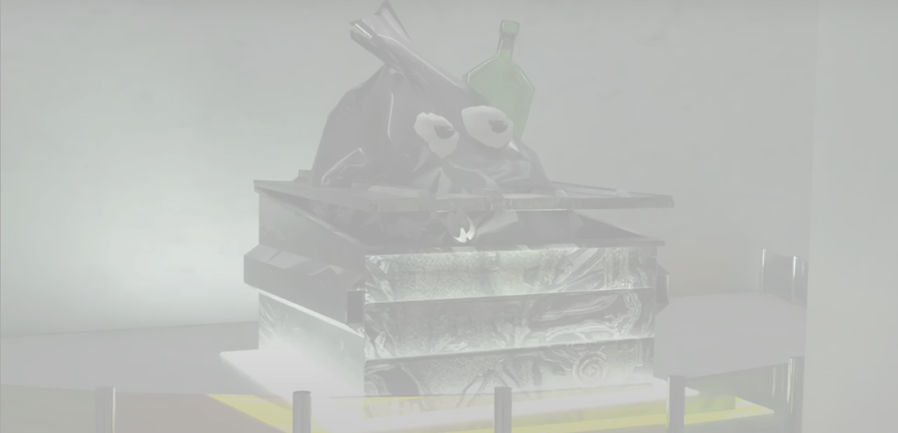

TRASH GALLERY

Галерея треша — место, где в мусоре
люди замечают что-то прекрасное.
В галерее можно найти работы из
мусора, фотографии забытых
оставленных вещей,
у которых своя история.
Зачем придумывать что-то новое,
если мусор представляет
обществености больше интереса?


В галерею люди приходят, чтобы посмотреть на искусство с другой стороны, со стороны треша.
Для более интересного изучения мусороискусства Trash gallery предлагает посетителям ознакомиться
с путеводителем, который с помощью обьемных деталях и массивных обьектов заставляет проникнуться соответсвующей атмосферой.


